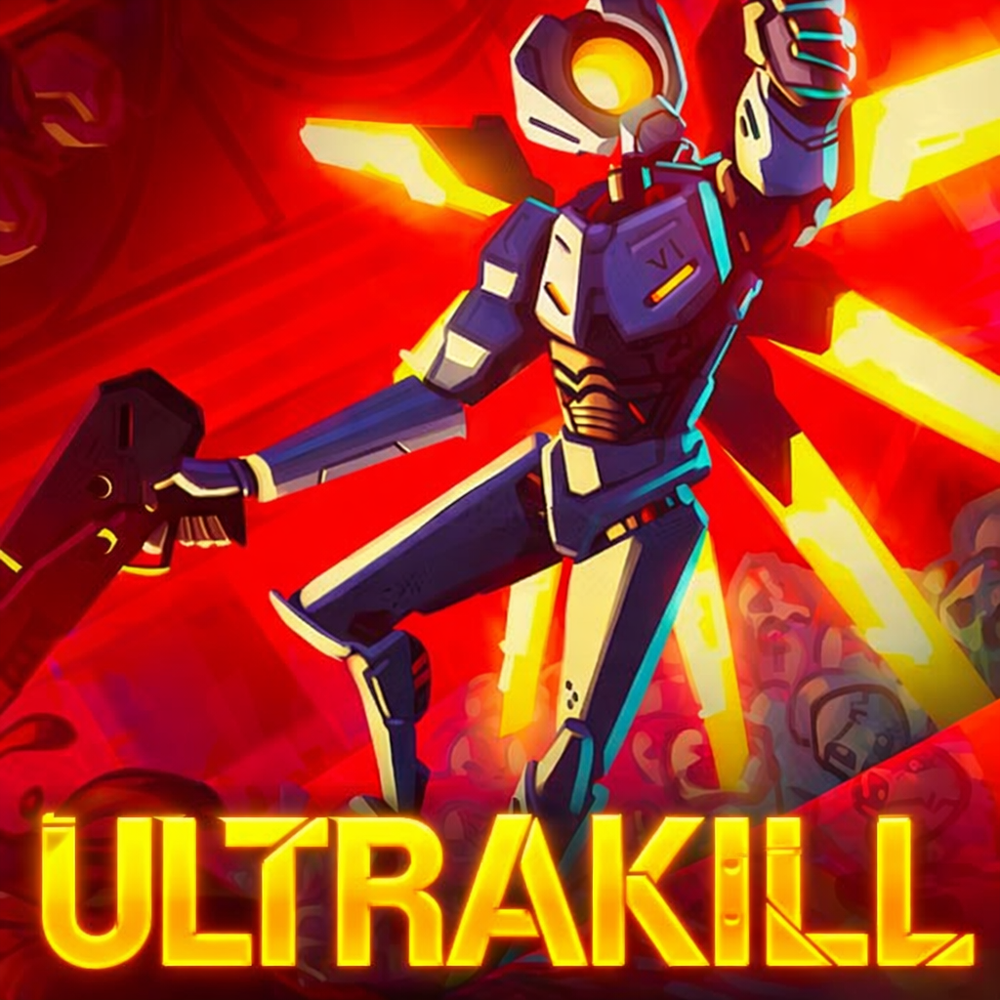
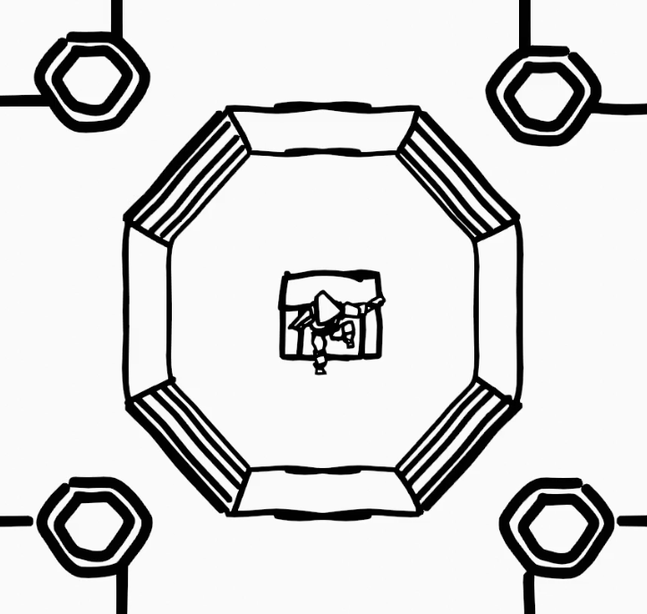
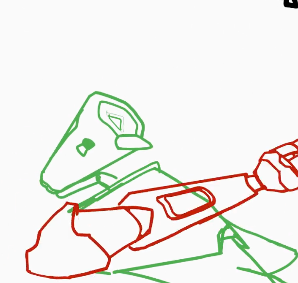
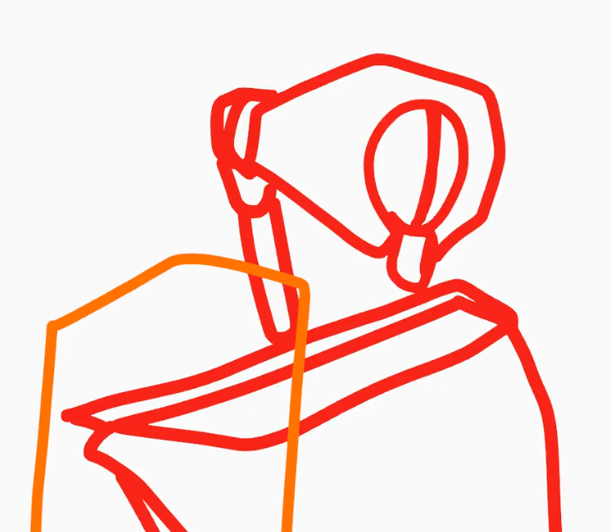
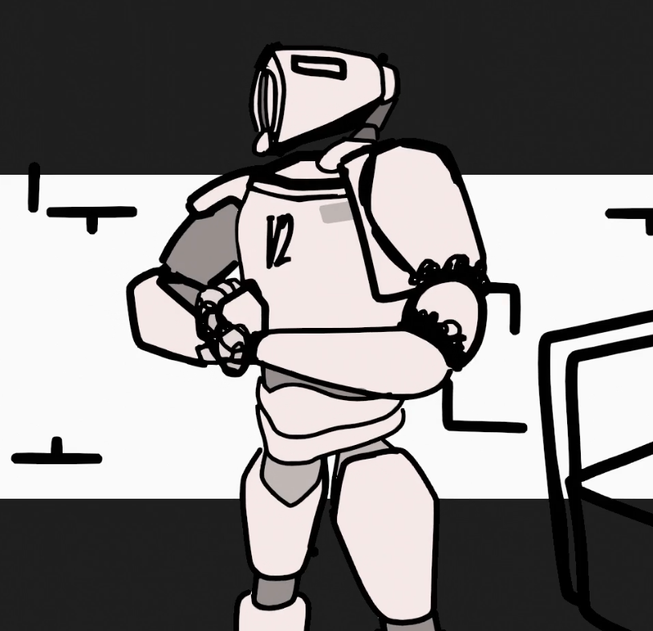
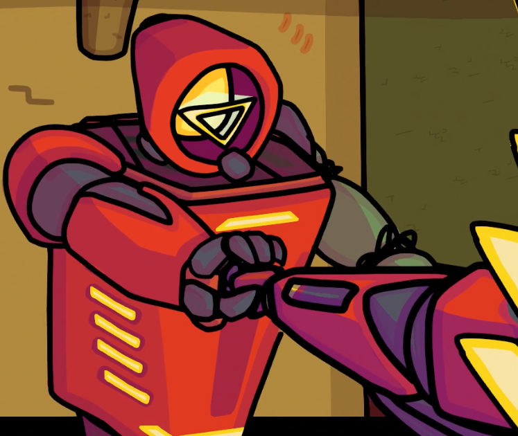
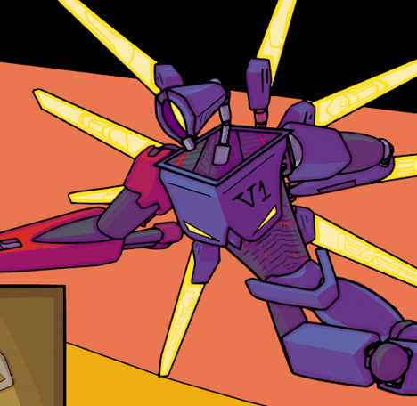
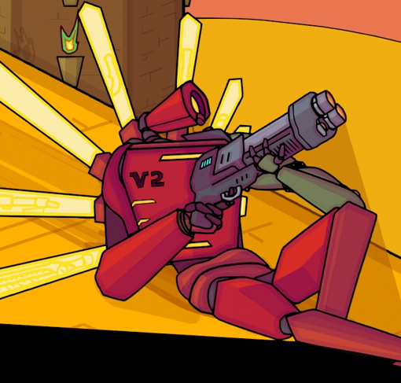
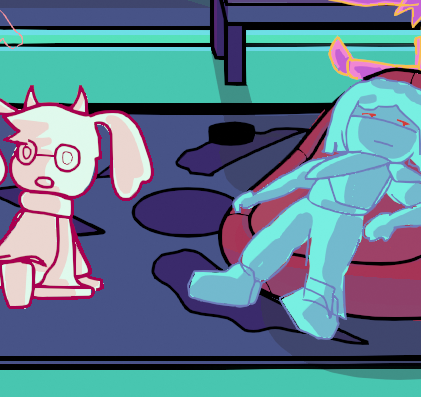
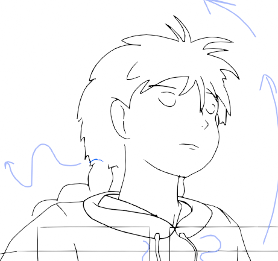

Duel is a fan animation based on the events of this video game.
Promotional art by New Blood Interactive.
Near the end of 8th grade I was animating a lot. I was sitting in 3D art when I had an idea for my next animation-- a robot fight! And instead of being stilted and black/white, this time it would be colored, shaded, and look really really good!
My last animation was related to ULTRAKILL, and it got really popular (12k+ views at the time) so I thought I would do another one. Hmmm.. lets see. The last animation I did was about 1 minute long, and it took 1 month. This one will be ~3 minutes long, so it should take 4 months. 3 months for 3 minutes, plus 1 extra for the coloring and shading.
Okay, lets do this! Should take 4 months!
I was wrong. Making Duel became a harrowing experience.

A whole animation, down the drain.
For the first 6 months, I just went at it. No pre-existing plan, no storyboard, nothing like that. I never did it before, and I wanted to see if I could make a good animation without a clear structure. I was curious!
Well after asking "Can I do this without a clear plan?" I found the answer was no. After 6 months I had an animation/storyboard hybrid which was messy and incoherent. I didn't like it, so I scrapped the whole thing. Being sentimental, I like to keep copies of things. But I completely lost records of the scrapped animation.
It's a shame; there was some really cool stuff in there.

Structure and framing.
So after scrapping everything, I made a storyboard. First I grabbed several sheets of paper, and over the course of 2 weeks I drafted a storyboard on paper.
Making it digitally was still challenging however; many things I couldn't translate from my paper plan to the screen. I was often asking myself: "How do I even work this angle? What am I even supposed to do next?"
But all things considered, it went pretty smoothly. After I think ~2 months? The storyboard was finished.

Moving things!
After making the storyboard, I began to work on key poses and tweening. This process took a loong loong time, and I struggled with constructing fun action.
The entire time I was making animations, my ambitions grew. I wanted to do more and more; I think around this time I had the idea to play around with aspect ratio bars a lot. So that made its way in.
By the end of this phase there were like 4000 frames of movement total. Each character was moving during the animation, so it was like 2000 for each.
This phase I think took around 5 or 6 months? The whole time I was also doing school, but even then I was animating a LOT.

Fixing things.
My characters were heavily off model throughout the whole animation, so I took it upon myself to fix everything which stuck out to me. At the same time, I was "cleaning-up" the linework from the previous animation phase.
Fixing the off-model stuff felt rather frustrating, but satisfying. Animation is always satisfying; I love animation. Same goes with the cleaning-up, although that wasn't as bad because it wasn't as tedious. For the model-fixing, I had to redraw EVERY FRAME like 3 or 4 times.
Including Correction and Clean-Up, this took about 6 months.

Fixing things.
By this point I was sick of Duel; by this time I had set and failed like 8 deadlines for this project, which felt awful. It's not included in the heading, but I also had to draw & animate backgrounds for everything, which was like another 1000 frames of work.
Following the end of October, I pledged to dedicate myself to the entirety of this project. I sat down and worked and worked and worked and sacrificed a lot of my sanity to finish this.
The actual coloring and shading experience was rather pleasant. I remember being very happy with how it looked.
Anyways, during Late November, December, and January I participated in what I like to call the "Duel Crunch". At the time I was not in a good place mentally and this work exacerbated that greatly. Long story short, I worked soo much and ended up hurting myself with my dedication. By the end I had I think 4000 hours in Blender, although plenty of that counted overnight hours.


I don't regret Duel; I talk about it here very negatively because the projects legacy has become rather tainted. But if you throw me back in time, I'm doing it all over again. Except this time I work harder. That's how much I love animation.
Upon publishing my animation, people loved it. It didn't get as many views as the previous animation (like 1k views) but I got so many comments praising my work. And I gained another 100 subscribers.
Overall, it was an intense learning experience, and I loved it. But gosh it got painful sometimes.
If you asked me what I thought if the animation quality, I don't think its very good. I think the animation is still too stilted, the pose-work poor, and the camera movement limited. I think there are too many flat, 2D shots and not enough interesting perspective.
But what do I know? I haven't seen it. After finishing the project I never watched it again. I don't plan on doing so.
Whenever I make a fan animation, it always comes from a place of sincere love and admiration. But by the end of it, I can't stand anything related to that media anymore. I know that, and yet I still make fan animations anyways.
Nowadays, I really don't like anything ULTRAKILL related. I struggle to listen to the same songs I listened to during the Duel Crunch; whenever wintertime rolls around I get flashbacks to those 4 AM December nights and it feels... bracing.
But I love animating, and I won't let a bad experience stop me.

After Duel, I took a long break from animating, but inevitably returned. I tried making a deltarune animation, (Deltarune is another video game I am a strong fan of) but my work on it petered out. I finished the storyboard and some coloring, but not the posing.
Its a shame, but probably a good thing. I had to work on academic stuff which was more intellectually fulfilling I think.

Near the end of Junior year, I wanted to replicate Studio Ghibli animation--I saw a very good video on replicating Ghibli style in Blender-- and I got very far. The line art and animation is cleaned up and done, what's troubling is background art. I made strong progress during the Junior/Senior summer, but since then I haven't touched it. Currently, I have to learn a new software, Krita, to properly paint the backgrounds for the animation.
Yume Nikki, a game I had played and finished a year earlier, greatly inspired me. I liked the main character a lot, so I wanted to animate a simple moment I found impactful.
At a certain point in the game, the main character Madotsuki emerges onto the rooftop of a building. The music becomes calm and reassuring. The background is beautiful, and a cat rests nearby. There was a sincerety and love within this moment which was very powerful; so many parts of this game are dark or foreboding, whilst this was... nice.
I think the idea for the animation is strong. Its only like 30 seconds long, but it's filled with new things.